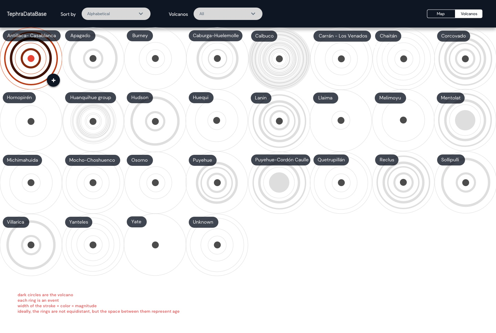

Disclaimer: The project is still in progress Our data providers are working along with an organization overlooking the volcanic system of Chile. As they have stated, the main goal is to identify those volcanos that represent the highest risk, considering frequency and magnitude of eruptions. Evidently, the risks associated with volcanic eruptions justify the need to derive relevant information at a glance. Our visualization will be the first step in developing a tool that allows researchers to surveil the historical activity of the Andean Volcanic Belt. The visualization will consist of a map view, and a detailed list of each volcano, which can be displayed in 3 key orders: alphabetical, number of events, and magnitude of events. Each ring surrounding the volcano represents an event (or eruption) which will be assigned a particular stroke-width in relation to its magnitude. When selecting a particular ring, the samples belonging to said event will be displayed, allowing the users to explore further. Additionally, researchers will be able to use this tool to identify the origin of collected samples. In order to achieve this goal, we must include the geochemical composition by volcano. This visualization has not yet been implemented.
Click here to view the actual visualization